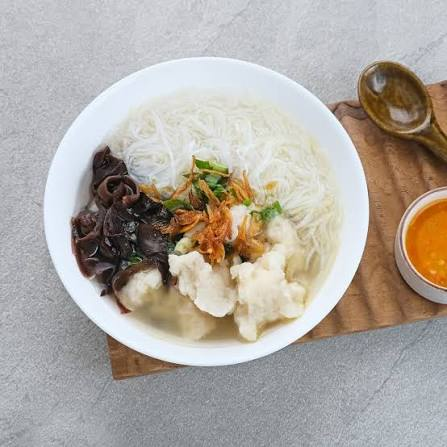
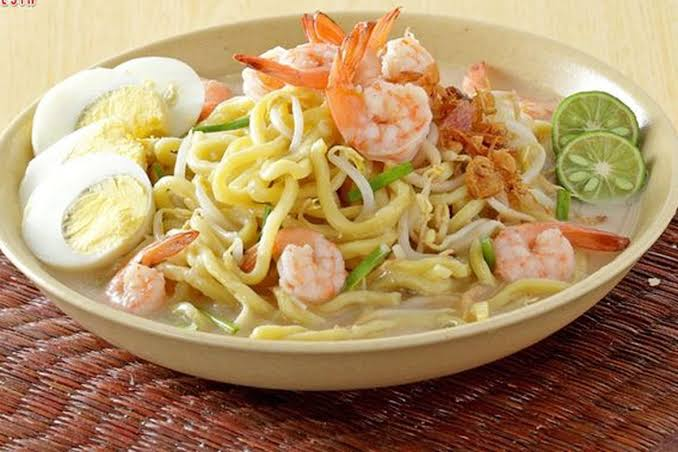

Kuliner Khas Palembang
 Pempek Olahan ikan dan sagu yang disajikan dengan kuah cuko yang asam, manis, dan pedas. |
 Tekwan Bakso ikan dalam kuah udang yang gurih dengan bengkuang, jamur, dan soun. |
 Mie Celor Mi dengan kuah santan dan udang yang gurih, disajikan dengan telur rebus. |
© 2026 Palembang Bumi Sriwijaya. Semua hak dilindungi.
Dibuat oleh Muhamad Guntur Ramadhan | Universitas Muhammadiyah Bengkulu